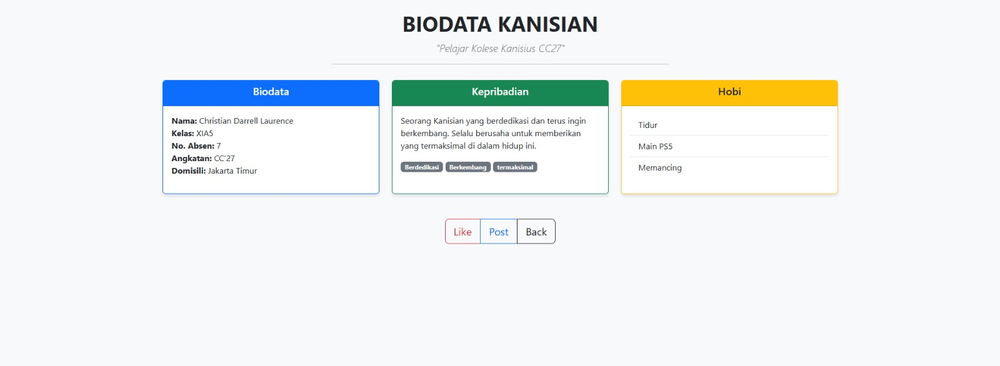

Project 01 — HTML & CSS Layouting
Website Biodata Siswa
Halaman portofolio dan profil pribadi terstruktur yang dirancang untuk menampilkan data diri, riwayat pendidikan, dan hobi menggunakan HTML semantik serta sistem layouting CSS.
Informasi Proyek
Proyek ini merupakan pengerjaan dasar dalam mendesain halaman web yang bersih dan terstruktur secara semantik. Fokus utama adalah menyusun berbagai baris konten profil secara sejajar dan rapi.
Dalam pengerjaan ini, saya membagi area layout menjadi bagian header, sidebar informasi pribadi singkat, area rekap data diri detail, serta bagian footer untuk menyajikan navigasi dasar.
- Semantics HTML: Menyusun dokumen dengan tag header, nav, main, section, dan footer yang sesuai standar SEO.
- Grid & Flexbox: Memanfaatkan properti Flexbox untuk menjajarkan kartu data diri secara sejajar dan responsif.
- Clean Styling: Memakai font dan warna kontras untuk kenyamanan membaca konten data.
Teknologi Utama
